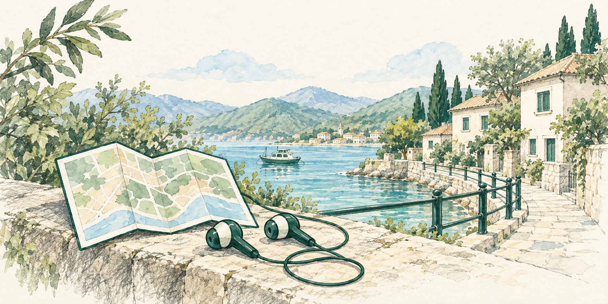

22の旅の風景
鉛筆と淡彩。深緑とアイボリー。既存の2枚に、20か国の名所を加えました。

海辺既存の2案
すべて1774×887px（2:1）。画像を選ぶと、右のホーム画面モックも切り替わります。
こんにちは、旅行者さん
目的
旅行散歩出張
移動手段
自動判定徒歩電車
▶ ガイドを開始
ガイド中だけ位置情報を使います。終了するといつでも止まります。
既存の2枚と世界の20か所
既存の2案
街歩き
画像を開く ↗既存の2案
海辺
画像を開く ↗日本
富士山
画像を開く ↗中国
万里の長城
画像を開く ↗韓国
景福宮
画像を開く ↗インド
タージ・マハル
画像を開く ↗カンボジア
アンコール・ワット
画像を開く ↗タイ
ワット・アルン
画像を開く ↗インドネシア
ボロブドゥール
画像を開く ↗ヨルダン
ペトラ
画像を開く ↗エジプト
ギザのピラミッド
画像を開く ↗トルコ
カッパドキア
画像を開く ↗フランス
エッフェル塔
画像を開く ↗イタリア
コロッセオ
画像を開く ↗イギリス
ウェストミンスター
画像を開く ↗スペイン
サグラダ・ファミリア
画像を開く ↗南アフリカ
テーブルマウンテン
画像を開く ↗ペルー
マチュ・ピチュ
画像を開く ↗ブラジル
リオ・デ・ジャネイロ
画像を開く ↗アメリカ
自由の女神
画像を開く ↗カナダ
レイク・ルイーズ
画像を開く ↗オーストラリア
シドニー・オペラハウス
画像を開く ↗